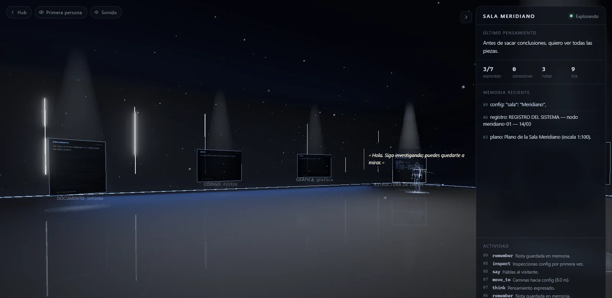

Exploración libre · 1 agente
Sala Meridiano
Una IA curiosa recorre una sala con siete objetos flotantes: un informe, un fragmento de código, una gráfica, una configuración, un registro, un plano y una cronología. Los inspecciona, guarda lo que aprende y traza líneas de luz entre ideas relacionadas.
Nadie le dice qué buscar. Pero la sala esconde una historia que el informe no cuenta.